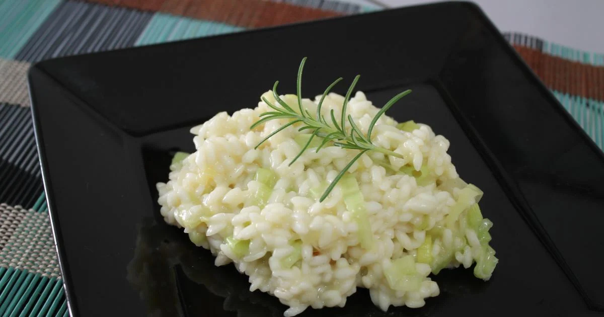

O risoto de alho-poró é uma deliciosa opção versátil que pode ser
servida como prato principal ou acompanhamento. Prepare-se para saborear
essa combinação incrível de texturas e sabores em um risoto irresistível
de alho-poró!
TÍTULO TESTE

Lista de Ingredientes:
2 colheres (sopa) de cebola picada
30 ml de vinho branco
3 xícaras (chá) de caldo de legumes quente
1 xícara (chá) de parmesão ralado
Pimenta-do-reino a gosto
Modo de Preparo:
Refogue a cebola picada no azeite e manteiga.
Quando estiver translúcida, acrescente o arroz arbóreo e refogue, para
que os grãos possam absorver toda a gordura.
Acrescente o vinho branco e refogue mais um pouco.
Despeje então, 1/3 do caldo reservado, abaixe o fogo e deixe cozinhar
em panela sem tampa. Quando estiver quase seco, acrescentar a metade
do caldo restante.